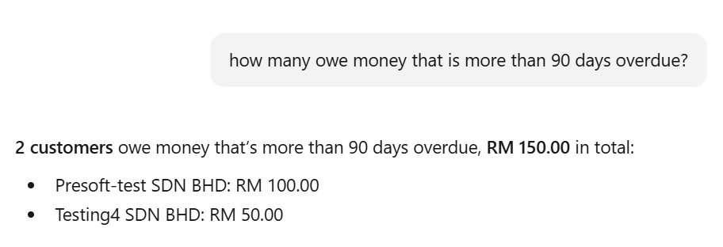
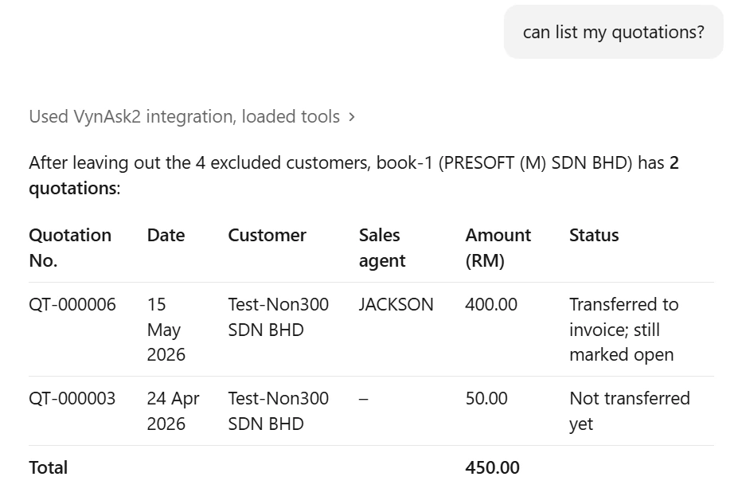
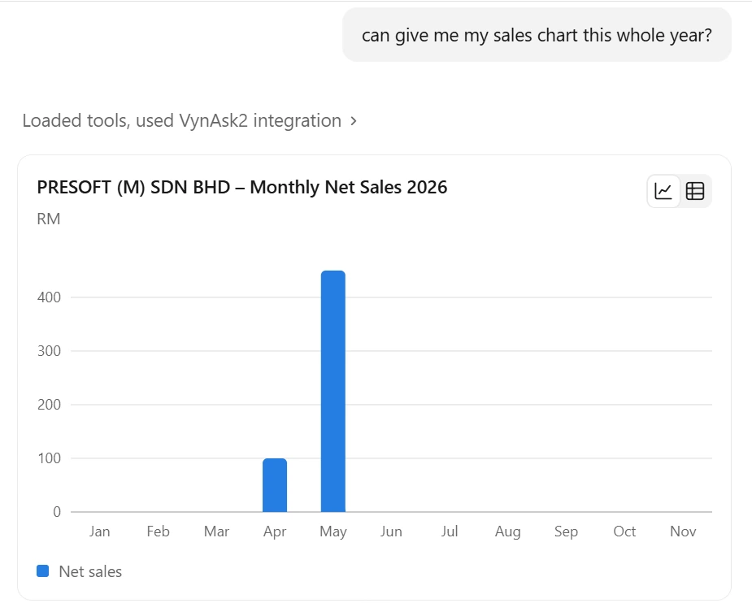
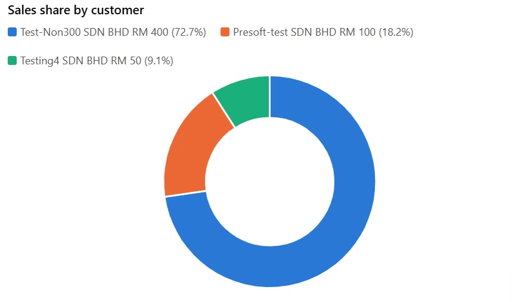
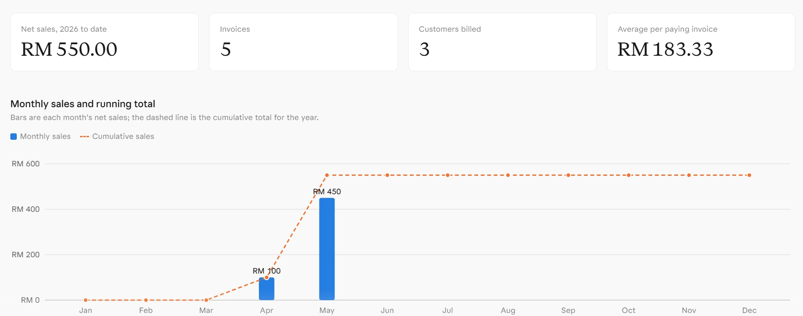
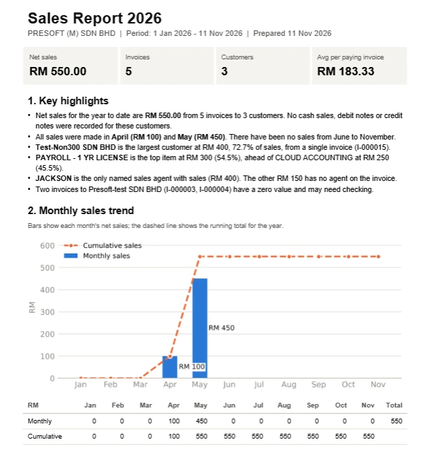
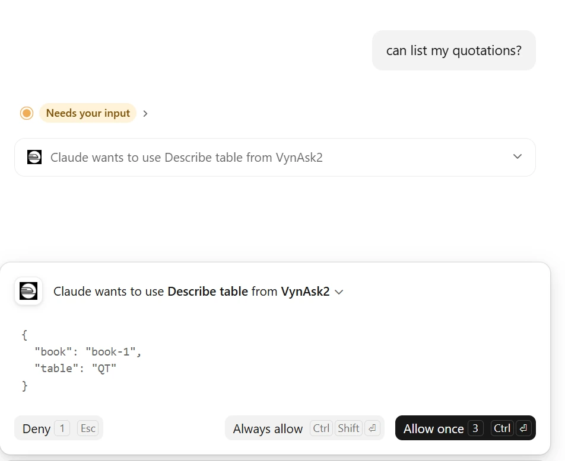
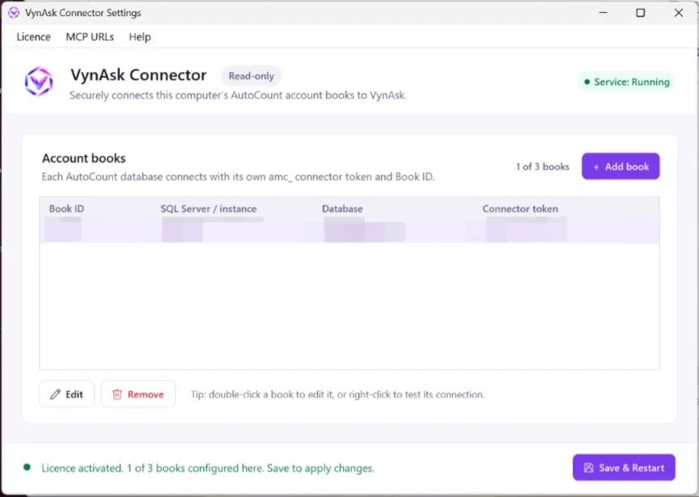
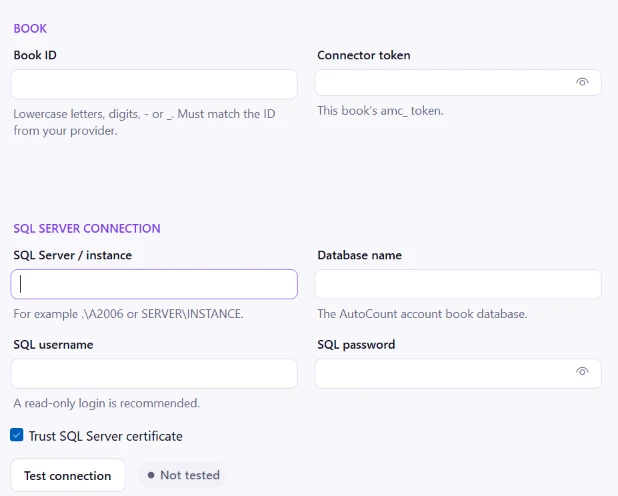

01 · SPEED
Answers in seconds.
Just ask. No report menus, and the figures come straight back.
VynAsk is an MCP (Model Context Protocol) server that lets ChatGPT or Claude answer from your own AutoCount data, in seconds.
Just ask. No report menus, and the figures come straight back.
Follows AutoCount rules. No cancelled or unapproved documents.
Your data is never changed.
Sales, debtors, creditors and stock in one place.
No need to open the desktop program.
Just ask. Answers in seconds.
Install VynAsk, then ask ChatGPT or Claude in plain words and get answers straight from your own AutoCount data.

Ask who owes you and how long it is overdue.

List quotations, invoices and more, with totals.

Ask for a chart and your AI draws it from your own books.

See each customer’s share at a glance.

Key numbers and a chart on one page, built from your books.

A written summary with highlights, a chart and a monthly table.

Allow once, always allow, or deny each request.
Click an image to enlarge
See sales, cash and debtors without waiting for a report.
Check overdue accounts and monthly figures in seconds.
Find your top customers and sales trends quickly.
Ask questions across all your AutoCount books.
Get sales reports and dashboards on demand.
No .NET to install. No ports to open.

Run VynAsk Setup on your AutoCount server.

Enter your licence token and add each book with a read-only SQL login.
Paste your VynAsk MCP URL into ChatGPT or Claude as a custom connector.
Contact us